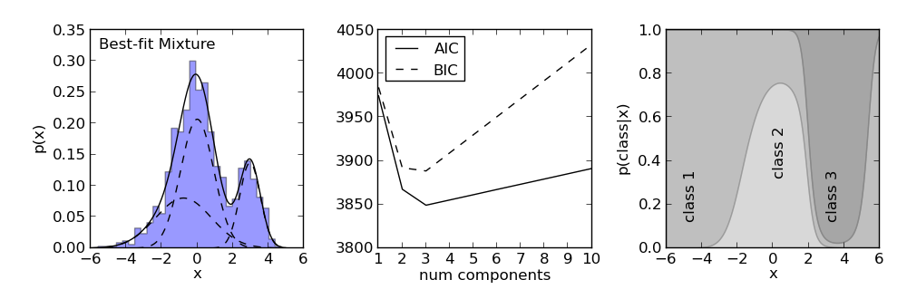

1D Gaussian Mixture Example¶
This example shows a 1D version of Gaussian Mixture Models

# Author: Jake VanderPlas <vanderplas@astro.washington.edu>
# License: BSD
# The figure produced by this code is published in the textbook
# "Statistics, Data Mining, and Machine Learning in Astronomy" (2013)
# For more information, see http://astroML.github.com
from matplotlib import pyplot as plt
import numpy as np
from sklearn.mixture import GMM
#------------------------------------------------------------
# Set up the dataset.
# We'll use scikit-learn's Gaussian Mixture Model to sample
# data from a mixture of Gaussians. The usual way of using
# this involves fitting the mixture to data: we'll see that
# below. Here we'll set the internal means, covariances,
# and weights by-hand.
np.random.seed(1)
gmm = GMM(3, n_iter=1)
gmm.means_ = np.array([[-1], [0], [3]])
gmm.covars_ = np.array([[1.5], [1], [0.5]]) ** 2
gmm.weights_ = np.array([0.3, 0.5, 0.2])
X = gmm.sample(1000)
#------------------------------------------------------------
# Learn the best-fit GMM models
# Here we'll use GMM in the standard way: the fit() method
# uses an Expectation-Maximization approach to find the best
# mixture of Gaussians for the data
# fit models with 1-10 components
N = np.arange(1, 11)
models = [None for i in range(len(N))]
for i in range(len(N)):
models[i] = GMM(N[i]).fit(X)
# compute the AIC and the BIC
AIC = [m.aic(X) for m in models]
BIC = [m.bic(X) for m in models]
#------------------------------------------------------------
# Plot the results
# We'll use three panels:
# 1) data + best-fit mixture
# 2) AIC and BIC vs number of components
# 3) probability that a point came from each component
fig = plt.figure(figsize=(10, 3.3))
fig.subplots_adjust(left=0.1, right=0.97,
bottom=0.17, top=0.9, wspace=0.35)
# plot 1: data + best-fit mixture
ax = fig.add_subplot(131)
M_best = models[np.argmin(AIC)]
x = np.linspace(-6, 6, 1000)
logprob, responsibilities = M_best.eval(x)
pdf = np.exp(logprob)
pdf_individual = responsibilities * pdf[:, np.newaxis]
ax.hist(X, 30, normed=True, histtype='stepfilled', alpha=0.4)
ax.plot(x, pdf, '-k')
ax.plot(x, pdf_individual, '--k')
ax.text(0.04, 0.96, "Best-fit Mixture",
ha='left', va='top', transform=ax.transAxes)
ax.set_xlabel('x')
ax.set_ylabel('p(x)')
# plot 2: AIC and BIC
ax = fig.add_subplot(132)
ax.plot(N, AIC, '-k', label='AIC')
ax.plot(N, BIC, '--k', label='BIC')
ax.set_xlabel('n. components')
ax.set_ylabel('information criterion')
ax.legend(loc=2, prop=dict(size=12))
# plot 3: posterior probabilities for each component
ax = fig.add_subplot(133)
p = M_best.predict_proba(x)
p = p[:, (1, 0, 2)] # rearrange order so the plot looks better
p = p.cumsum(1).T
ax.fill_between(x, 0, p[0], color='gray', alpha=0.3)
ax.fill_between(x, p[0], p[1], color='gray', alpha=0.5)
ax.fill_between(x, p[1], 1, color='gray', alpha=0.7)
ax.set_xlim(-6, 6)
ax.set_ylim(0, 1)
ax.set_xlabel('x')
ax.set_ylabel(r'$p({\rm class}|x)$')
ax.text(-5, 0.3, 'class 1', rotation='vertical')
ax.text(0, 0.5, 'class 2', rotation='vertical')
ax.text(3, 0.3, 'class 3', rotation='vertical')
plt.show()